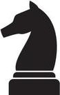
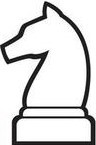

 |
 |
|---|
El caballo es una de las piezas más singulares y estratégicas del ajedrez. Se mueve en
forma de "L", combinando dos casillas en línea recta y una en perpendicular, o
viceversa, lo que le permite saltar sobre otras piezas, algo único entre las figuras del
juego.
Este movimiento irregular lo convierte en una amenaza impredecible, ideal para atacar
posiciones vulnerables y generar tácticas sorpresivas. Los caballos son especialmente
útiles en posiciones cerradas, donde su capacidad de maniobra destaca frente a otras
piezas. Además, su posición en el centro del tablero maximiza su alcance, controlando
hasta ocho casillas a la vez. El caballo es una pieza esencial para la creatividad táctica.